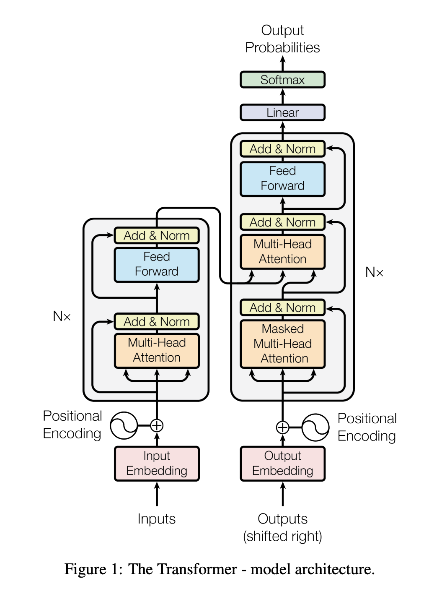

My goals
as a Data Analyst
Hi, I'm Matej Papac, and I'm really excited about building things that work. I've been diving into creating machine learning systems, and it's been a fascinating journey. I love taking an idea and figuring out how to make it real, like building an AI assistant that helps people shop, or a tool that can summarize huge amounts of text. I even challenged myself to build a language model from scratch, just to see how it all fits together. For me, it's about the joy of creating something useful and seeing it come to life. I'm always eager to learn more and build more impactful projects.

AI Projects
Built an e-commerce chatbot using Python, combining Flask for the backend and LangChain with Astra DB for RAG-driven responses. This initiative delivers an AI-powered shopping assistant, providing users with accurate and helpful information.
The application is deployed on AWS, leveraging services like EC2, and utilizes Boto3 for AWS integration.

Developed a text summarization web application using FastAPI and Python. Implemented a pipeline with stages for data ingestion,
transformation, model training, and evaluation,
as orchestrated by the main.py script. The application allows users to summarize text via a POST endpoint, with training triggered via a separate endpoint.The application is deployed on AWS, leveraging services like EC2, and utilizes Boto3 for AWS integration

Developed a character-generating chatbot using PyTorch and Python. The project involved creating a language model that can generate text, training it with the training script, and enabling interactive chat functionality via the chatbot script. Key aspects included: a transformer-based design, the use of multi-head self-attention (a technique that allows the model to focus on different parts of the input when generating text),
and hyperparameter tuning with the grid script to optimize performance.
Data Analyst Projects
GlowBox Dataset
A/B project

In the GlowBox A/B testing project, I harnessed SQL for data extraction and
manipulation, leveraged Tableau for data visualization and analysis, and utilized
Excel for further data processing and statistical analysis. This multi-tool
approach enabled a comprehensive evaluation of the impact of a new product
banner on user conversion rates and spending behaviors, revealing actionable
insights and informing strategic decisions.
This analysis delves into passenger feedback on Ryanair from 2012-2024, revealing insights through SQL and Python, and visualized with Tableau for a data-driven understanding of customer experience trends.
Online Retailer: Extracting, Transforming, and Loading Data

ETL process for an online retailer's data, ensuring data accuracy and usability.
Extracted, cleaned, and transformed data, preparing it for further analysis and
predictive modeling.
Esports Earnings Full Analysis [1998 - 2023]

This project entailed a comprehensive analysis of esports data to derive insights into trends, earnings, and the impact of various factors on the popularity and financial success of games.
The process involved data extraction, cleaning, exploration with Python, analysis using SQL queries, and visualization through Tableau.